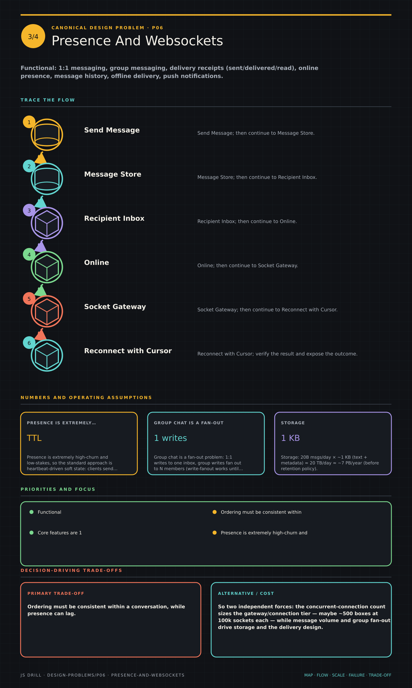

https://frosty110.github.io/js-drill/assets/system-design/infographics/design-problems/p06/presence-and-websockets.pngFunctional: 1:1 messaging, group messaging, delivery receipts (sent/delivered/read), online presence, message history, offline delivery, push notifications.
A WhatsApp/Messenger-style messaging service delivering messages in real time over persistent WebSocket connections. The signature challenges are mapping each user to the server holding their live connection, ordering and durably storing messages, delivering to offline users via store-and-forward + push, and fanning out group messages.
All questions, model answers and diagrams for Design a Chat System →